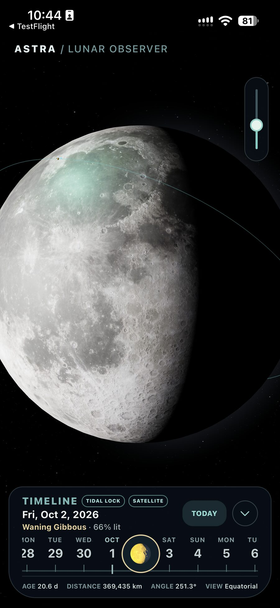

See the light move
Explore a detailed 3D Moon whose illuminated face changes with the selected date.
Astra is an interactive lunar observer for iPhone and iPad. Watch the Moon turn, explore its phases across the calendar, and see the geometry behind the light.
Designed for quiet curiosity. No account or advertising.

Follow the Moon as a world in motion. Astra brings a richly detailed lunar view together with the measurements and calendar that give each phase its place.
Explore a detailed 3D Moon whose illuminated face changes with the selected date.
Step across dates, return to today, and follow the Moon through its monthly rhythm.
Read the Moon's age, distance, and angle alongside its phase and orbital view.